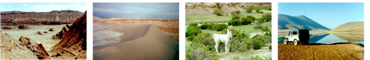

Só precisa da identidade mesmo. Mas o passaporte é legal levar para depois você ter de lembrança os carimbos de entrada/saída dos países. Só por isso.
Vale na Argentina e no Uruguai. Mas no Chile não. É preciso "fazer" uma Carteira de Motorista Internacional. O fazer está entre aspas pois tudo o que você precisa é ir no Rotary mais próximo e pagar cerca de 100 reais, só isso.
Fomos sem planejar nada, só sabíamos que queríamos chegar até o deserto e precisávamos seguir para Oeste. Compramos os mapas nos postos de gasolina pelo caminho. Se for comprar um mapa da Argentina, é melhor fazer isso na própria Argentina, certo? O mesmo vale para o Chile. Não se preocupe, a viagem é tranqüila!
Saindo de Curitiba e fazendo nossa rota, que não passa pelo Paraguai, são 3.000 Km até o deserto. Depois mais 3.000 para voltar. Já se você quiser fazer o giro completo e descer até Santiago, depois seguir para Buenos Aires, visitar o Uruguai e entrar no Brasil pelo Chuí, são 9.000 Km ao todo.
Nunca usei GPS e não sei nada sobre.
Veja a rota completa em nossos mapas.
Lá tem os mapas, com as cidades em que passamos circuladas. Aí fica fácil acompanhar o roteiro. De Curitiba até a Argentina você pode ir na direção de Foz do Iguaçu (estrada muito boa e milhares de pedágios) ou vai beirando a divisa com Santa Catarina (foi o que fizemos, não tem pedágio e as estradas são boas).
Você pode cruzar o Paraguai em linha reta ou dar a volta por baixo na Argentina (foi o que fizemos). Sobe direto até Salta e aí começam os Andes e não tem mais erro.
Aí é uma escolha pessoal. Nós evitamos entrar no Paraguai nas duas viagens. Nada contra o país, mas julgamos ser mais prudente passar pelo menor número possível de países, para diminuir as chances de problemas com guardas corruptos, assaltos e outros. Vá até Foz do Iguaçu e conheça as Cataratas, mas depois desça mais ao sul e entre na Argentina, passando por Corrientes. Se você conhece o Paraguai, pode cruzar por ele mesmo até chegar em Salta na Argentina.
Nós pegamos a rota que vai de Mendoça a Buenos Aires, e ali não tem atrativo nenhum. Não vale. Mais para o sul eu não conheço.
Sim, vários! Confira onde eles estão e seus valores (no ano de 2001) em nosso roteiro
Pode ir com qualquer carro, não precisa ser 4x4. A maioria das estradas do percurso é asfaltada. No final, onde é de areia, é liso como asfalto, pois como lá não chove, não tem erosão nem buracos. A vantagem do 4x4 é de você sair da estrada e ir ver algo mais de perto, se ficar com vontade. Mas novamente: não é necessário ser 4x4 para ir e curtir a viagem.
Veja com sua seguradora se ela tem cobertura no Mercosul, geralmente tem.
Há postos por todo o caminho, sendo a única exceção a travessia dos Andes, que são cerca de 100 Km sem postos. Não há motivo para preocupação pois os carros possuem autonomia muito maior do que isso, mesmo em condições extremas como estar a mais de 4.000 metros de altitude. Abasteça em Santo Antonio de Los Cobres (ou em Calama) e fique tranqüilo(a). Em San Pedro de Atacama também há um posto, com diesel inclusive. Os passeios ao redor de San Pedro têm no máximo 100 Km de distância de ida, então abasteça antes de sair e fique tranqüilo(a).
Quando fui era de Toyota Bandeirante e só abastecia com diesel. Nossas companheiras de viagem usaram gasolina no seu Corsa alugado. Quanto a álcool ou GNV, não sei dizer.
Não. Veja esta resposta. Ah, e você sabia que levar galão com combustível dentro do carro é proibido? Pois é.
Não. Nem mesmo na subida dos Andes, que é a parte que mais força o motor.
Os guardas pedem para ver quando te param, então é bom levar. Não sai caro. Fala-se de um mínimo de 2 metros e que precisa ter ponta para engate. Vá na loja e ao comprar o cabo, já peça para colocarem um gancho em uma ponta (para ancorar no teu carro) e para fazerem o "laço" na outra ponta (para colocar na bolinha do engate de outro carro). Assim você pode rebocar ou ser rebocado, no caso de algum imprevisto.
Uno e gêisers? Mmmmmm. Normalmente sim. A não ser que tenha havido algo com a estrada. Mas isso os caras das vans (de aluguel, que fazem pacotes turísticos) te informam em San Pedro. Essa foi difícil de lembrar porque passamos nessa estrada caindo de sono às 5 da manhã, tudo escuro :)
Tem! Há cybercafés em San Pedro com acesso à Internet.
A fonte de água doce dos hotéis do caminho, é normal, tratada e canalizada. Já lá em San Pedro não sei, mas se bem me lembro a água deles é canalizada do topo das montanhas, que tem neve permanente e eles aproveitam o degelo. Água mineral tem. Também tem suco, refrigerante e outras bebidas engarrafadas. A infra-estrutura é boa, principalmente levando-se em conta que se está no meio do nada. San Pedro tem até Internet! Não a subestime :)
Olha, nas duas vezes que fui, teve um dia de racionamento em San Pedro, e só. Era final de Fevereiro. Mas de resto foi tranqüilo.
Você pode levar sua barraca e todos os apetrechos pois tem campings pelo caminho, e lá em San Pedro também (Taka-Taka é bom). Há pousadas em conta também, basta procurar. San Pedro é uma cidade pequena, tudo é muito perto. Com uma pequena passeada pelas ruas você consegue pesquisar vários preços e tomar sua decisão.
Nós sempre chegávamos na cidade ainda de dia e fazíamos a pesquisa de preços, indo em várias pousadas, perguntando para os moradores onde tinha, circulando com o carro pela cidade. Nada reservado ou esquematizado. Como as cidades são pequenas, essa "pernada" garante um passeio agradável e você já conversa com alguns moradores, enturmando-se.
Fomos em 2000 e 2001, e as coisas eram caras sim, mas não muito. Na época a cotação do dólar estava perto dos dois reais. Se pensasse "1 dólar = 1 real", os preços eram como os do Brasil.
Levamos metade real, metade dólar. Há casas de câmbio em todos os lugares e elas sempre aceitam o Real (por um valor baixo, mas aceitam). De qualquer forma, como são cidades pequenas, você sempre vai ter que trocar seu dinheiro (seja dólar ou real) pela moeda local, pois em vários lugares eles não aceitam dólares. Principalmente nas redondezas do deserto e Andes.
Cartão de crédito não sei porque não uso. E naquela época eu também não usava Visa Electron, então realmente não sei dizer.
Nas duas vezes que fui, era Carnaval (Fevereiro/Março). Os dias eram bem quentes, porém com aquele vento frio cortando. Uma boa dica é levar um Anorak, aquelas blusas lisas e finas que não esquentam, mas não deixam o vento passar. À noite o frio chega forte, é bom estar bem coberto/agasalhado.
Primeiro, lembre-se que as pessoas que moram lá vivem normalmente, então não fique imaginando que respirar nos Andes é algo complicado ou trabalhoso. Se você correr ou fizer um grande esforço físico, vai sentir que "falta ar no ar" quando precisar dar uma inspirada mais forte. Mas na rotina normal de passeios, você nem percebe a diferença, seu corpo acostuma rápido. Não precisa levar nem tomar nada.
Sim. As estradas são boas, mesmo as não asfaltadas, e até as motos bem baixas poderão seguir caminho sem problema. A parte mais difícil é convencer o seu corpo a encarar DIAS sentado em cima da moto. E arranje alguns alforjes ou amarre malas, pois você vai precisar levar bastante bagagem, inclusive com peças sobressalentes para não ficar sozinho no meio do nada em caso de quebras ou furos de pneu.
Quanto a ir sozinho, nunca viajei assim, não sei o que te dizer. Há ônibus em todo o trajeto, só nas proximidades do deserto é que fica mais complicado mesmo. Mas em Calama (pertinho do deserto, cidade grande, com aeroporto) dá pra alugar carro (4x4 inclusive, se preferir), vai ser bom pra você explorar bem o deserto.
Se não for incomodar muito carregar a bicicleta no carro, vale a pena levá-la sim! Nas redondezas (próximas) de San Pedro há lugares exóticos para visitar, e de bicicleta a emoção é outra. O próprio Vale da Lua é perto, se você estiver em forma chega lá fácil de bicicleta. Mas hoje também pode ter aluguel de bicicletas em San Pedro, o que facilita pois espaço no bagageiro é valioso em uma viagem dessas.
Como fomos no verão, a neve só estava no cume das montanhas mais altas, muito longe do alcance dos pobres mortais :)
Ah, tem que contar com a sorte e com Deus :)
Primeiro, um pouco de contexto:
Ali no norte da Argentina, na região do Chaco os guardas SEMPRE param carros brasileiros e inventam motivos para arrancar alguns dólares.
Fui duas vezes para o Atacama e nas duas foi exatamente igual: eles te param, dificilmente te olham na cara e você nunca vê uma identificação clara com o nome do policial. Te pedem mil documentos, alguns bizarros, e te mostram uma cartilha com leis de trânsito brasileiras, impressa em 1.800 e bolinha.
Se você passou ileso(a) pelos documentos, começa a fase dos equipamentos. Triângulos, estepe, lençol, cabo de aço e o que mais vier na cabeça deles. Eles vão pedir algo bizarro que você não tenha.
Há uma multa de trezentos e poucos dólares pela tua infração e seu carro será apreendido. MAS... Se você pagar aí, uns 20 dólares, ele te libera na hora e você pode seguir viagem tranqüilamente com sua família...
Ou você dá uns 10, 20 dólares em cada parada e segue viajando, ou gasta uns 30 minutos de discussão e enrolação pra sair limpo sem pagar nada. Geralmente é o tempo que eles levam para desistir.
Relembrando que isso foi em 2000 e 2001! Pode ser que esse cenário tenha mudado (assim espero). Se você foi e não teve problemas, me avise!
Algumas dicas para que você possa se precaver:
Vá! E faça uma boa viagem!